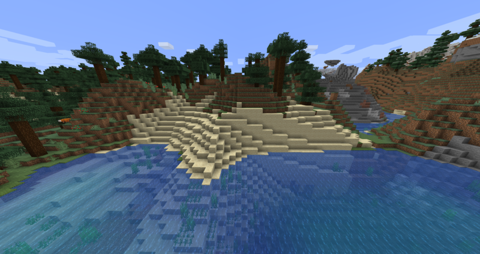
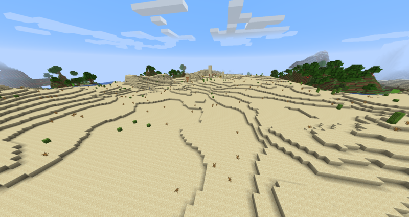
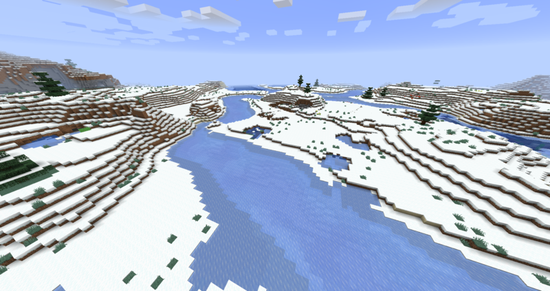
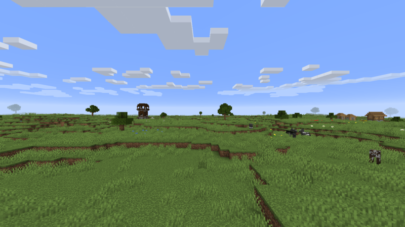
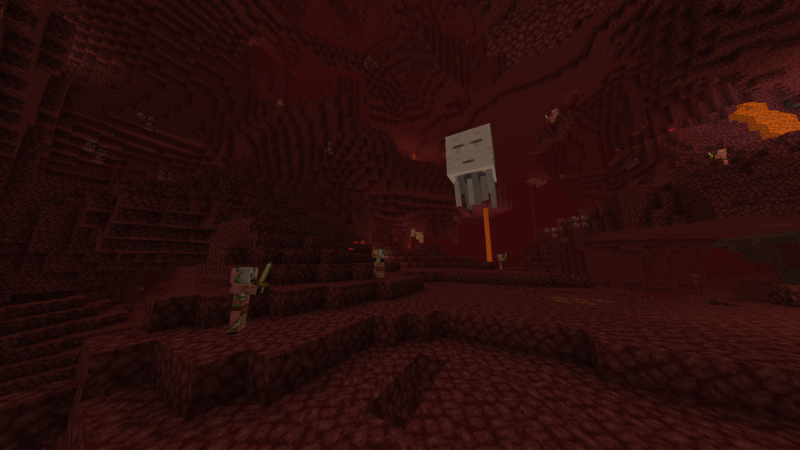
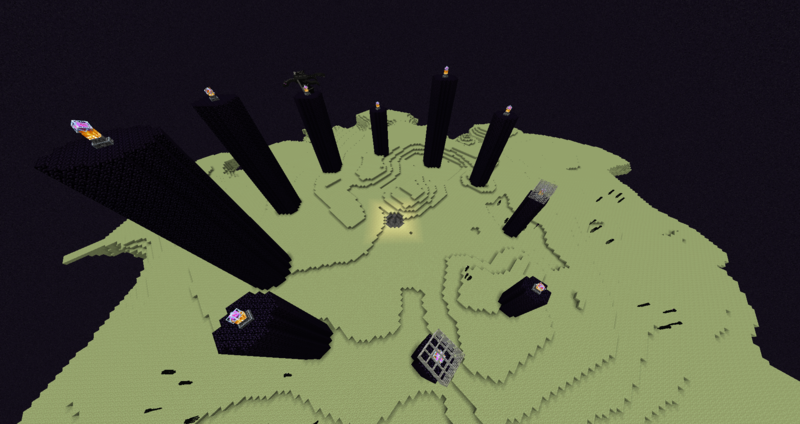

-

Bioma da praia
Geradas onde os oceanos se encontram com outros biomas, as praias são compostas principalmente por areia. As praias penetram na paisagem, retirando os blocos originais e colocando em blocos de areia. Eles também são úteis para a pesca. Mobs passivos, exceto tartarugas, não desovam nas praias.
-

Bioma de deserto
Um bioma árido e inóspito que consiste principalmente de dunas de areia, arbustos mortos e cactos. Arenito, e às vezes fósseis, são encontrados sob a areia. Os únicos mobs passivos que se reproduzem naturalmente nos desertos são os coelhos dourados / cremosos, suas cores bem camufladas contra a areia. À noite, cascas geralmente aparecem no lugar de zumbis normais; a falta de obstrução visual torna as turbas hostis altamente visíveis. A cana-de-açúcar pode ser encontrada se o deserto estiver próximo a um oceano ou bioma fluvial. Aldeias desertas, poços desérticos e pirâmides desérticas são encontradas exclusivamente neste bioma. Postos avançados saqueadores também podem ser gerados aqui. Este bioma às vezes aparece como uma fina borda em torno dos biomas de terras áridas.
-

Bioma de neve
Um rio com uma camada de gelo cobrindo sua superfície. Ele é gerado apenas quando um bioma Rio entra ou encontra um bioma nevado. Salmões desovam debaixo d'água enquanto coelhos e ursos polares desovam no gelo. À noite, Drowned pode desovar abaixo do gelo com Strays na superfície. Nenhum outro monstro pode surgir aqui, mesmo no subsolo, exceto em um spawner.
-

Bioma de grama
Um bioma plano e gramado com colinas e poucos carvalhos. Lagos, pequenas cavernas subaquáticas e aldeias são comuns. Aberturas de cavernas, lagos de lava e cachoeiras são facilmente identificáveis devido ao terreno plano desobstruído. As multidões de fazendas são facilmente encontradas nos biomas das planícies; este bioma e suas variantes também são um dos únicos biomas onde os cavalos desovam naturalmente. Postos avançados de saqueadores também podem ser gerados.
-

Bioma do nether
Este é um dos biomas usados para gerar o Nether. Antigamente, era o único bioma presente na dimensão. Dentro desse bioma, multidões como ghasts, matilhas de piglins, piglins zombified e ocasionais cubos de magma e endermen desovam. Certas estruturas, como minério de quartzo Nether e veios de Glowstone, e fortalezas Nether geram apenas no Nether. Os lagos de água (e outras estruturas do mundo superior) ainda podem gerar se o Nether for usado em uma predefinição superplana. Camas explodem quando usadas neste bioma.
-

Bioma do fim
Este bioma é usado para gerar o círculo de raio 1000 centrado nas coordenadas 0,0 na extremidade. A ilha central End é gerada no centro deste círculo e é cercada por um vácuo completo até a borda do bioma. A maioria dos recursos do final são exclusivos para aquela ilha, incluindo o dragão ender, os pilares de obsidiana, os cristais finais, a plataforma de spawn 5x5, o portal de saída e os 20 portais finais centrais. Grandes quantidades de endermen desovam neste bioma. Não chove ou neva neste bioma, ao contrário de outros biomas de baixa temperatura. As ilhas externas do Fim podem ser acessadas usando o portal do portal do Fim depois que o dragão do Fim for derrotado. Se o bioma for usado para um mundo superplano, o céu parece quase preto e um dragão ender nasce nas coordenadas 0,0 no mundo superior. Apenas endermen desovam à noite.
-
Beach Biome
Generated where oceans meet other biomes, beaches are primarily composed of sand. Beaches penetrate the landscape, removing the original blocks and placing in sand blocks. These are also useful for fishing. Passive mobs other than turtles do not spawn on beaches. For the history of beaches, see the Beach page.
-
Desert biome
A barren and inhospitable biome consisting mostly of sand dunes, dead bushes, and cacti. Sandstone, and sometimes fossils, are found underneath the sand. The only passive mobs to spawn naturally in deserts are gold/creamy rabbits, their coloring well-camouflaged against the sand. At night, husks usually spawn in the place of normal zombies; the lack of visual obstruction makes hostile mobs highly visible. Sugar cane can be found if the desert is next to an ocean or river biome. Desert villages, desert wells, and desert pyramids are found exclusively in this biome. Pillager outposts can also generate here. This biome sometimes appears as a thin edge around badlands biomes.
-
Snow biome
A river with a layer of ice covering its surface. It generates only when a River biome enters or meets a Snowy Biome. Salmon spawn underwater while rabbits and polar bears spawn on ice. At night, Drowned can spawn below the ice with Strays on the surface. No other monsters can spawn here, even underground, except in a spawner.
-
Grass biome
A flat and grassy biome with rolling hills and few oak trees. Lakes, small underwater caves and villages are common. Cave openings, lava lakes and waterfalls are easily identifiable due to the flat unobstructed terrain. Farm mobs are easily found in Plains biomes; this biome and its variants are also one of the only biomes where horses spawn naturally. Pillager outposts may also be generated.
-
Nether biome
This is one of the biomes used to generate the Nether. It was formerly the only biome present in the dimension. Within this biome mobs such as ghasts, packs of piglins, zombified piglins and the occasional magma cubes and endermen spawn. Certain structures, such as Nether quartz ore & glowstone veins, and Nether fortresses generate only in the Nether. Water lakes (and other Overworld structures) can still generate if the Nether is used in a superflat preset. Beds explode when used in this biome.
-
The end biome
This biome is used to generate the circle of radius 1000 centered at the 0,0 coordinates in the End. The End central island is generated at the center of this circle, and it's surrounded by a complete vacuum all the way to the edge of the biome. Most of the End features are exclusive to that island, including the ender dragon, the obsidian pillars, the End Crystals, the 5x5 spawn platform, the exit portal and the 20 central End gateways. Large amounts of endermen spawn in this biome. It does not rain or snow in this biome unlike the other low-temperature biomes. The outer islands in the End can be accessed using the End gateway portal after the ender dragon has been defeated. If the biome is used for a superflat world, the sky appears nearly black and an ender dragon spawns at the 0,0 coordinates in the Overworld. Only endermen spawn at night.